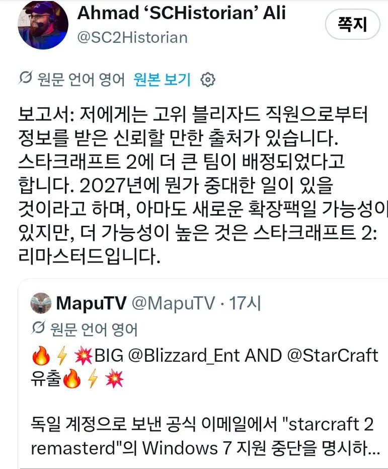
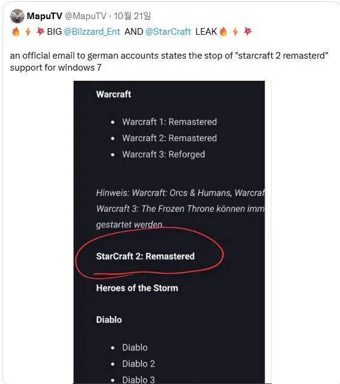

스타 2 개발팀이 대형으로 꾸려졌단 썰이있음
스타 2 리마스터나 추가확장팩으로 생각됨
최근에 블자는 워크래프트 리마스터나 추가 확장팩을 내는 등 기존 IP의 추가 확장팩이나 리마스터 사업에 적극적임
스타 2 리마 -> 스타 2 엔진변경
그렇다면 히오스도...?


스타 2 개발팀이 대형으로 꾸려졌단 썰이있음
스타 2 리마스터나 추가확장팩으로 생각됨
최근에 블자는 워크래프트 리마스터나 추가 확장팩을 내는 등 기존 IP의 추가 확장팩이나 리마스터 사업에 적극적임
스타 2 리마 -> 스타 2 엔진변경
그렇다면 히오스도...?
협동전 사령관 좀 더 내줘 맵도 내줘
아직도 스크래2 견제겜임?
근데 엑셀도 멀티코어 제대로 못갈구는데
마소놈들이 저걸 할 수 있을까 ㅋㅋㅋㅋㅋ
타크래2 딴것보다 손목 너무아파서 못하겠음
엥 굳이?
스타 FPS신작인가 때문인거 같음. 늙은이들이야 스타IP를 아는데 요즘애들 입장에서는 그냥 데스티니나 헬다이버즈 아류작으로 보이거든